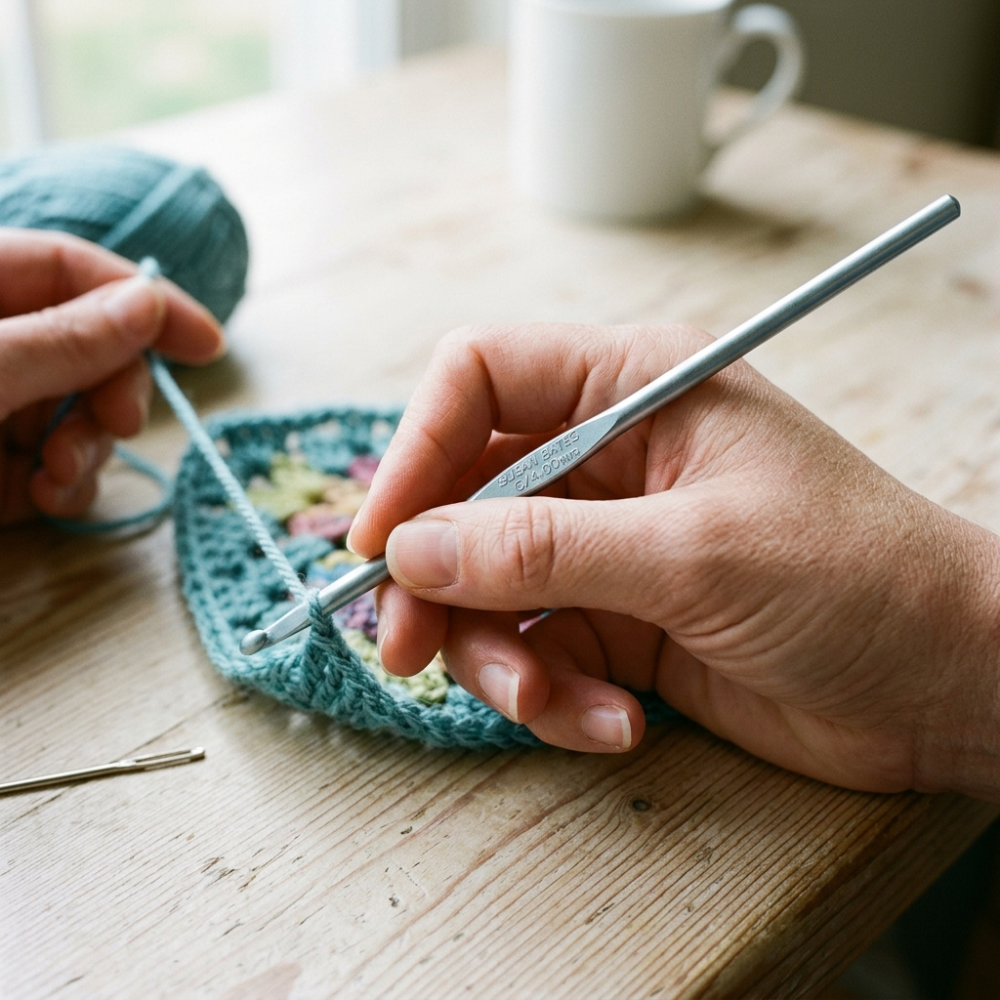
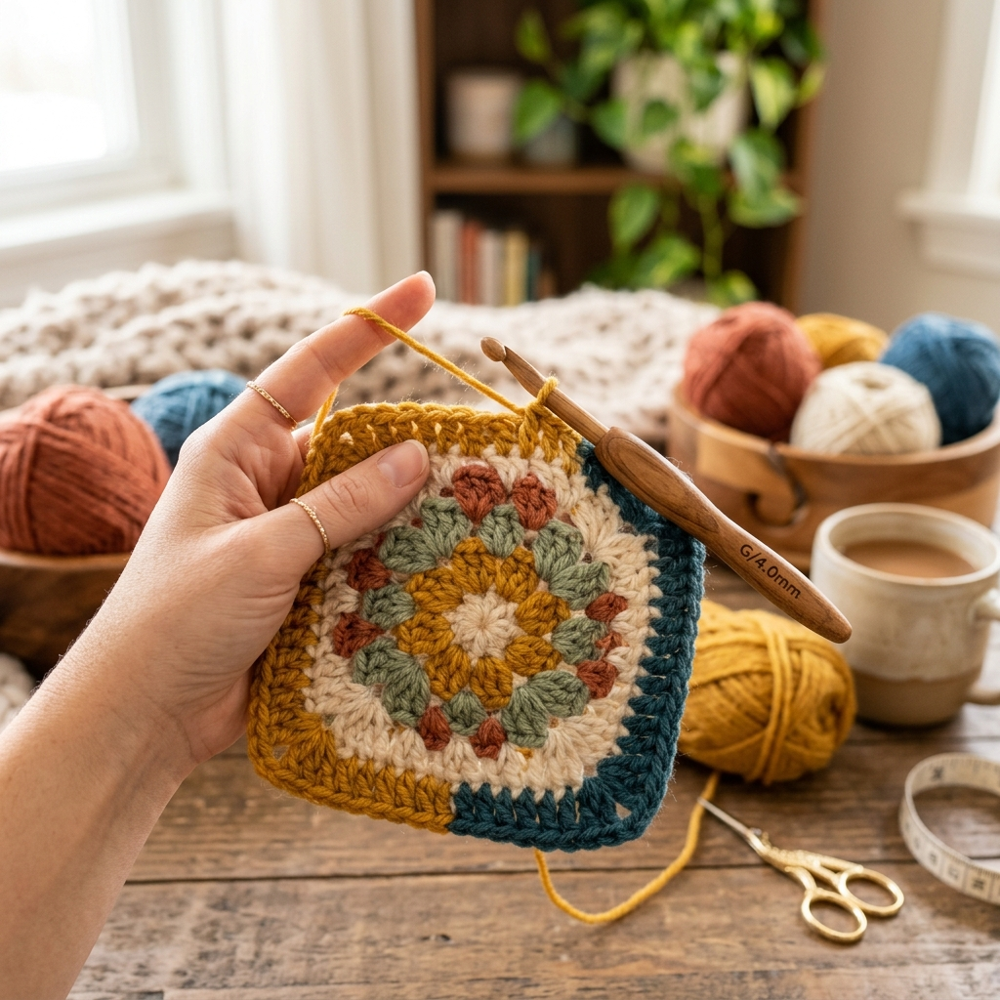
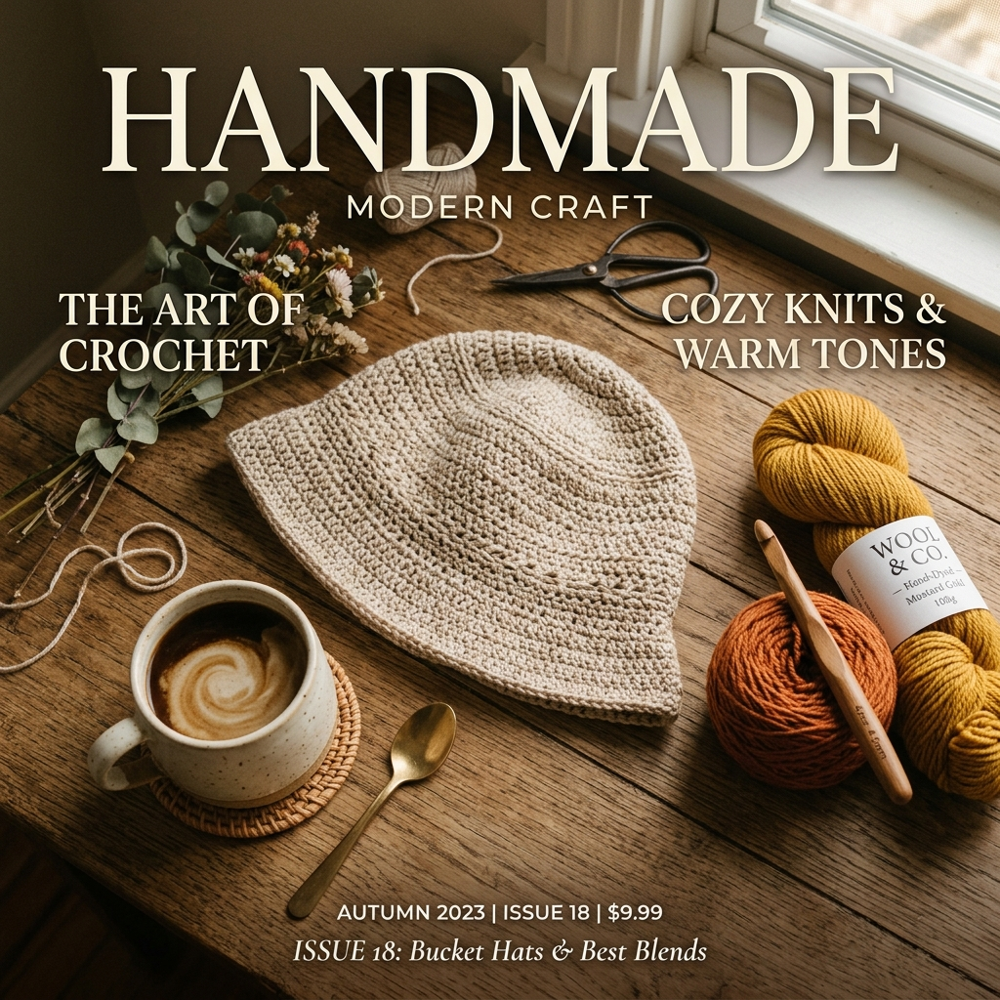
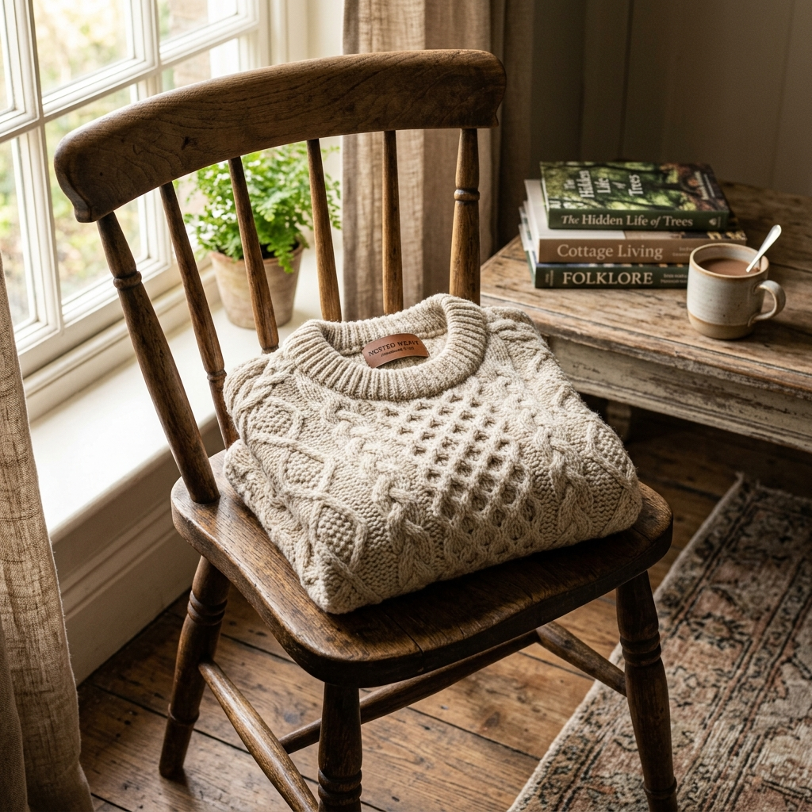

พื้นฐานนิตติ้ง
เริ่มต้นตั้งแต่การจับไม้ ขึ้นห่วง จนถึงลายถักพื้นฐาน เข้าใจง่ายทำตามได้ทันที
ค้นพบแพทเทิร์นสุดพิเศษ บทความแนะนำเทคนิคระดับมือโปร และชุมชนคนรักการถักโครเชต์ที่อบอุ่นที่สุด
ไม่ว่าคุณจะเป็นมือใหม่หรือผู้เชี่ยวชาญ เรามีเนื้อหาที่จัดเตรียมไว้ให้คุณอย่างครบครัน
อธิบายละเอียดทุกขั้นตอน สำหรับคนที่ยังไม่เคยจับเข็มมาก่อนเลยโดยเฉพาะ
1. แบบจับดินสอ (Pencil Grip): ใช้นิ้วโป้งและนิ้วชี้จับที่รอยบุ๋มของเข็มเหมือนจับปากกา ให้นิ้วกลางช่วยประคองด้านล่าง เหมาะกับคนที่ชอบความละเอียด
2. แบบจับมีด (Knife Grip): คว่ำมือลง นิ้วโป้งกดรอยบุ๋ม นิ้วชี้และนิ้วที่เหลือกำด้ามเข็มไว้หลวมๆ คล้ายเวลาหั่นผัก เหมาะกับคนปวดข้อมือง่ายหรือถักไหมเส้นใหญ่

ขั้นที่ 1: พันไหมพรมรอบนิ้วชี้และนิ้วกลาง 2 รอบให้เกิดจุดไขว้ทับกันเป็นรูปกากบาท (X) บนนิ้ว
ขั้นที่ 2: ดึงไหมพรมเส้นหลัง ลอดใต้เส้นหน้าขึ้นมาให้กลายเป็นห่วง
ขั้นที่ 3: ถอดห่วงออกจากนิ้ว สอดหัวเข็มเข้าไปในห่วงนั้น
ขั้นที่ 4: ดึงปลายไหมพรมทั้งสองด้านให้ห่วงรูดรัดหัวเข็ม (อย่าให้แน่นจนเข็มขยับไม่ได้ ต้องรูดขึ้นลงได้นิดหน่อย)

ขั้นที่ 1: เอานิ้วชี้มือซ้ายพาดไหมพรมให้ตึง ใช้นิ้วโป้งและนิ้วกลางมือซ้ายบีบตรงปม Slip Knot ใต้เข็มไว้ให้แน่น
ขั้นที่ 2: ใช้หัวเข็ม (มือขวา) ตวัดช้อนใต้เส้นไหมพรมจากด้านหลังมาด้านหน้า (Yarn Over)
ขั้นที่ 3: บิดหัวเข็มคว่ำหน้าลงเล็กน้อย แล้วใช้จะงอยเข็มเกี่ยวไหมพรมดึงลอดผ่านห่วงที่อยู่บนเข็มออกมา
💡 เคล็ดลับ: อย่าเกร็งมือ! ปล่อยให้ไหมไหลลื่น ถักบ่อยๆ โซ่จะขนาดเท่ากันเองครับ

ขั้นที่ 1: เริ่มจากถักโซ่ความยาวตามต้องการ จากนั้นสอดหัวเข็มลงในโซ่ช่องที่ 2 (นับถอยหลังถัดจากเข็ม)
ขั้นที่ 2: ตวัดหัวเข็มเกี่ยวไหมพรมดึงลอดช่องโซ่ขึ้นมา (ตอนนี้บนเข็มจะมี 2 ห่วง)
ขั้นที่ 3: ตวัดหัวเข็มเกี่ยวไหมพรมอีก 1 ครั้ง แล้วดึงรวดเดียวผ่านทั้ง 2 ห่วงบนเข็ม!
🎉 ยินดีด้วย! คุณเพิ่งถักลายตัว X สำเร็จ ซึ่งเป็นลายหลักของการถักตุ๊กตาทุกตัวครับ

อัพเกรดสกิลการถักของคุณด้วยบทความและคู่มือจากผู้เชี่ยวชาญ

เริ่มต้นตั้งแต่การจับไม้ ขึ้นห่วง จนถึงลายถักพื้นฐาน เข้าใจง่ายทำตามได้ทันที
ศิลปะการถักตุ๊กตาสไตล์ญี่ปุ่น เรียนรู้วิธีสร้างตัวละครในฝันของคุณให้ออกมามีชีวิต

เจาะลึกประเภทของไหมพรม วิธีเลือกใช้ให้เหมาะกับชิ้นงาน และการคำนวณปริมาณ
เคล็ดลับการเลือกขนาดเข็มโครเชต์ให้แมทช์กับไหมพรม เพื่อชิ้นงานที่สมบูรณ์แบบ
รวบรวมข้อมูล วิธีทำ และสัญลักษณ์ของลายถักโครเชต์ทั้งหมด (X, T, F, E, V, A) จบในที่เดียว

แพทเทิร์นคลาสสิกยอดฮิต เรียนรู้วิธีถักและต่อดอกเป็นชิ้นงานที่หลากหลาย
วิธีวัดตัวและคำนวณห่วง สำหรับการถักเสื้อสเวตเตอร์ตัวแรกของคุณ
5 ปัญหาหลักที่มือใหม่ทุกคนต้องเจอ (เบี้ยว ย้วย แน่นไป) พร้อมวิธีแก้ไขฉุกเฉิน
สอนถอดรหัสแพทเทิร์นภาษาอังกฤษและสัญลักษณ์แบบญี่ปุ่น (Chart) ให้คุณถักได้ทั่วโลก